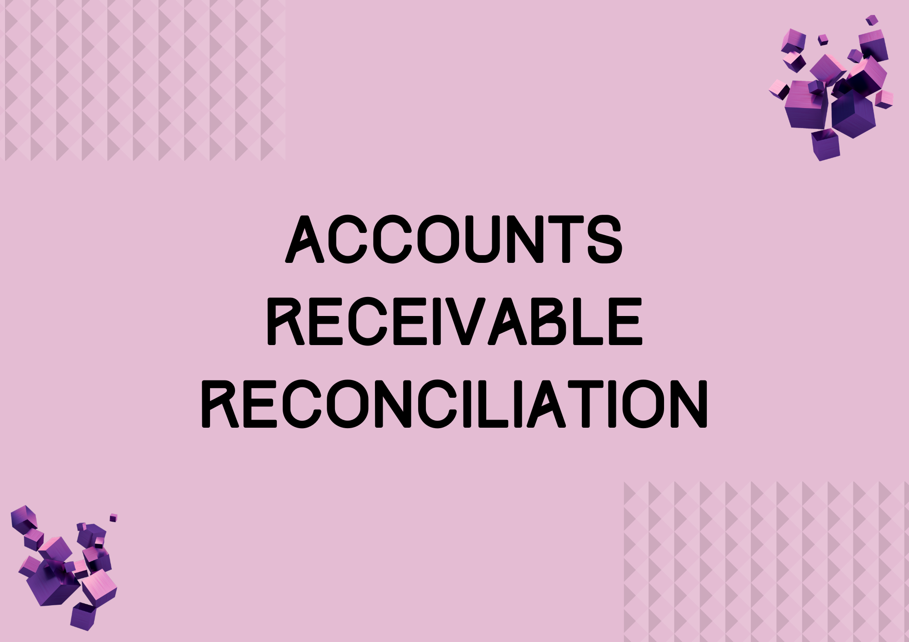
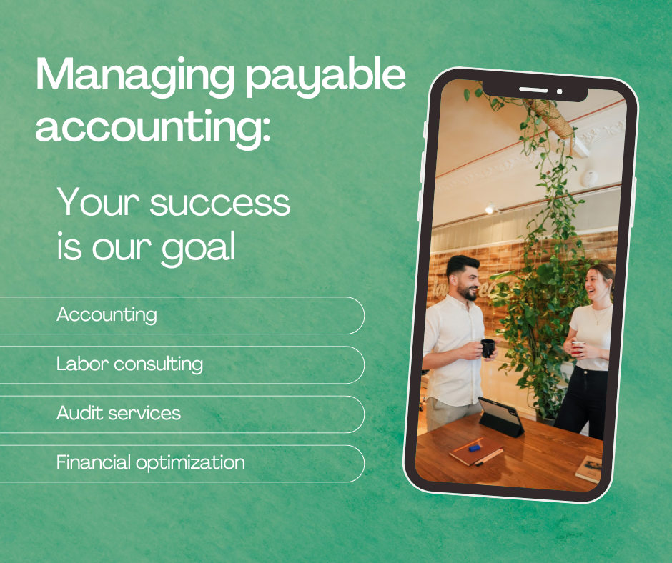

Business Process Outsourcing
Your Time is Valuable – Focus on Growth, let us handle your financial operations
Running a business comes with enough challenges—your finance operations shouldn’t be one of them. That’s where we come in.
Our Business Process Outsourcing solutions streamline critical financial functions, improving efficiency, accuracy, and control while freeing your team to focus on innovation and strategic growth.
We manage end to end finance processes with precision, transparency, and strong internal controls. Our BPO services include:

Accounts Receivable Management
Accounts Payable Management Treasury & Cash Flow Management
Treasury & Cash Flow Management
Why Outsource Your Finance Function to Us?
Cost-effective alternative to hiring full-time finance teams
Increased accuracy through standardized processes and expert oversight
Better transparency with real-time reporting and dashboards
Reduced operational workload, allowing focus on strategic priorities
Scalable solutions that grow with your business
Reliable, error-free financial management
If you’re looking for a partner who cares about your business as much as you do, we’re here to help. Our goal is to make your day to day easier, your processes smoother, and your financial management more reliable. Let us take the operational load off your plate, so you can focus on building, scaling, and doing the work you love. We act as your finance team with optimised cost and 100% accountability.